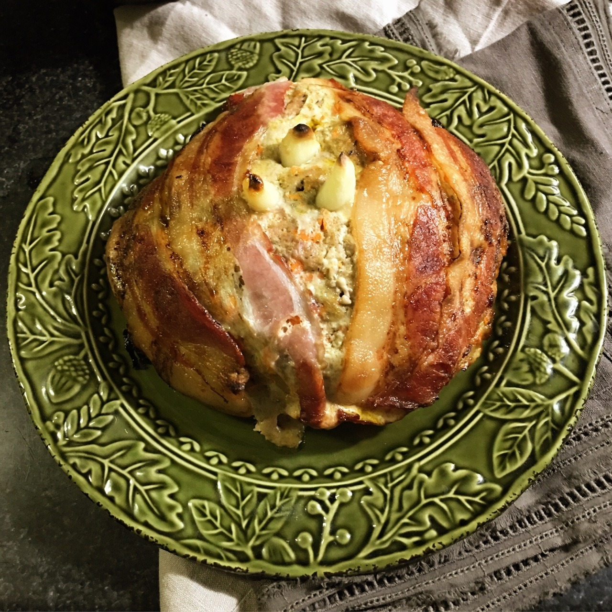

Horker Loaf

Description
While horker meat might not be everyone's first pick, it
sustains many a coastal family. It's considered lucky to eat
the roasted garlic "tusks" at the top of the loaf, and children
will often compete with one another to get them
Ingredients
- One 3.75-ounce tin smoked oysters
- Garlic Cloves, Divided - 5
- Large Carrot, Peeled and Chopped - 1
- Ground Beef - 1 1/2 pounds
- Breadcrumbs - 1/2 cup
- Heavy Cream - 1/3 cup
- Egg - 1
- Stormcloak Seasoning - 1 teaspoon
- Salt - 1 teaspoon
- Pepper - 1 teaspoon
- Bacon - 5 slices
Steps
- Preheat the oven to 425°F and line a baking sheet with
parchment paper
- Mince 2 cloves of the garlic, then ulse the oyster, minced garlic,
and carrot several times in a food processor until there are no large
chunks. In a large bowl, combie the pureed mixture with the
ground beef, breadcrumbs, heavy cream, egg, Stormcloack Seasoning,
salt, and pepper. Mix thoroughly, then form into a slightly oblong
dome, no higher than 4 inches, on the preared baking sheet.
- Gently press the 3 remaining garlic cloves into the top of the loaf.
Then, working from just next to the garlic, begin laying the bacon
slices across the short side of the loaf, 2 on each side. Lay one final
strip over the garlic to keep it from burning.
- Bake for about 40 minutes. Peel back the top piece of bacon to reveal
the garlic tusks before serving.